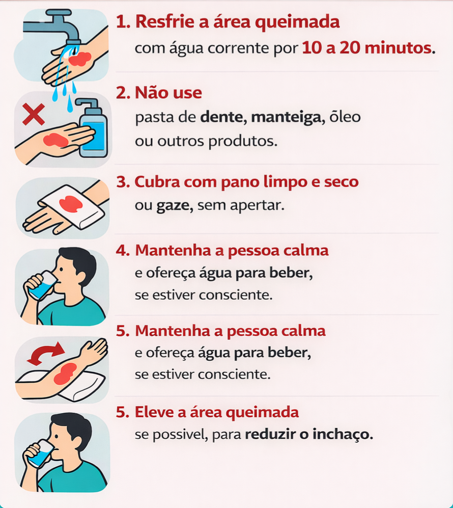

Queimadura — O que fazer

Passo a passo de queimaduras
- Remova a vítima da fonte de calor imediatamente. Se as roupas estiverem em chamas, coloque-as no chão e cubra com um pano molhado.
- Resfrie a queimadura com água morna ou em temperatura ambiente por 10 a 20 minutos (nunca use água fria ou gelo diretamente).
- Remova joias, anéis e roupas apertadas antes que a inchaço se desenvolva.
- Cubra a queimadura com um pano limpo e seco, ou gaze estéril se disponível.
- Se a queimadura for grave (bolhas, queimadura profunda ou atinge grande área), não remova nada que esteja aderido. Chame o SAMU imediatamente.
- Ao ligar para o SAMU (192), informe endereço completo, ponto de referência, profundidade e extensão da queimadura, e número de pessoas envolvidas.
Cuidados adicionais
- Elevar o membro queimado acima do nível do coração para reduzir inchaço.
- Não estoure bolhas — deixe que cicatrizem naturalmente.
- Se a vítima estiver inconsciente e respirando, coloque em posição lateral de segurança.
- Se não houver respiração, inicie compressões torácicas imediatamente.